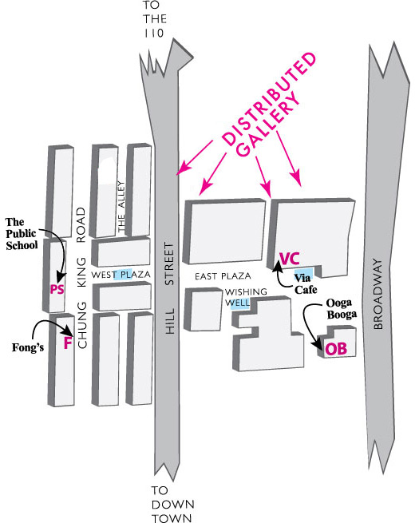

Not a gallery in the traditional sense, the Distributed Gallery is a video exhibition project made of televisions and video monitors in various semi-private locations around (but not limited to) Chinatown. At the moment, video monitors are located in Fong's, Via Cafe, Ooga Booga, and The Public School. Each month a new artist, writer, curator, collective, or other cultural practitioner is asked to select one video for each monitor in its given context, the sum of which amounts to an exhibition. Each exhibition is accompanied by a conversation catalog.
Excerpt from the introduction to Distributed Gallery catalogs:
The Distributed Gallery, of course, has no place. There is no at, or there are several ats: at the time of this writing they are on top of a cabinet at Fong's, on a book display table at Ooga Booga, in the window of The Public School, and in the back hallway next to the bathrooms at Via Cafe. It is situated in little bits of the real world, or otherwise non-art places (although the operators of these establishments may take issue with the classification).
Televisions can fit in anywhere, but always seem out of place. In the last day, I've seen television screens at the gas station next to the pumps, in an aisle at the supermarket, in my bedroom, on the bus, and across from the counter at the corner store. The stuff on these televisions is similarly diverse from trivia to the news to racy Asian cinema to Lost.
The people that have agreed to make a show for the Distributed Gallery (not always artists or curators) have agreed to dive into this messy (but extremely familiar) territory.

The Distributed Gallery is funded in part by The Andy Warhol Foundation for the Visual Arts.